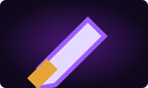
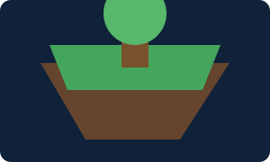
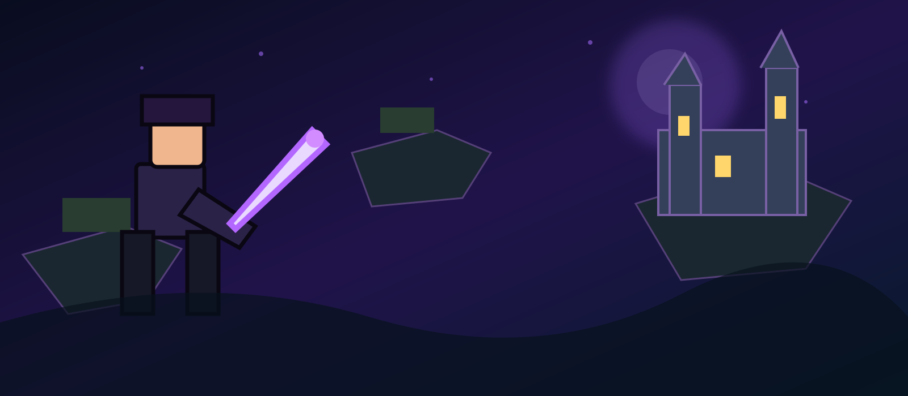

Home / SkyBlock
SkyBlock
The Fakepixel SkyBlock encyclopedia. Browse categories, mechanics and progression information.
Items

Weapons
Swords, bows and combat equipment.
Pets
Pet stats and abilities.

Minions
Production and upgrades.

Armor
Sets and bonuses.
Collections & Progression
More articles can be added by duplicating the included article template and linking it from this page.